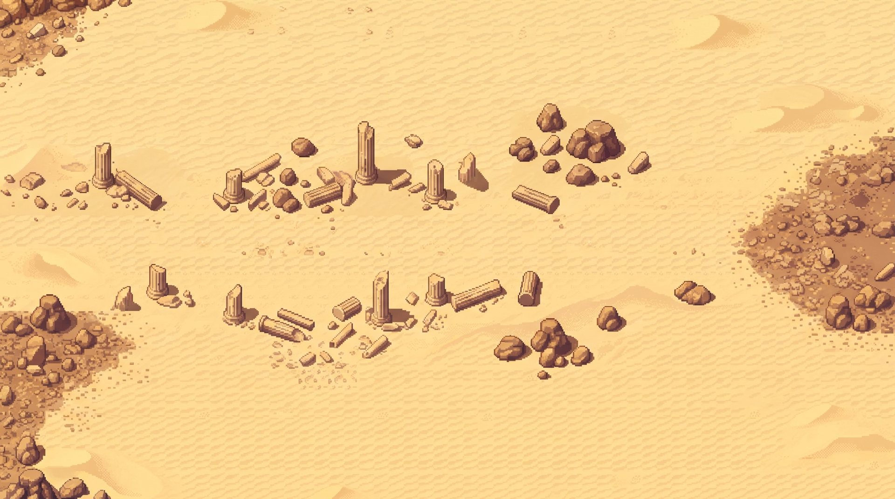

Haritalar, hareketli
Gemini'dan gelen çöl ve volkan görsellerinin üstüne hareket katmanı. Altıgen ızgarayı açarak 15×7 düzeninin görsele oturup oturmadığını, volkanda ise görselden çıkardığım zemin türlerini görebilirsiniz.

Gündüz
Sıcak titreşimi görüntüyü hafifçe dalgalandırır. Yukarı süzülen toz zerrecikleri ve çok hafif bir parlama sisi eklenir. Savaşı engellemez, sadece sıcağı hissettirir.
Akşam
Rüzgârla savrulan kum taneleri, sürüklenen iki sis katmanı ve kenarlarda kararma var. Fırtınanın gücü dalgalanır: esip yatışır, sahne canlı kalır. Oyun kuralındaki "4 altıgenden uzağa dezavantaj" bu görselle uyumlu.
Volkan
Lav parıltısı nabız gibi atar, közler yukarı süzülür, hafif bir kül sisi akar. "Zemin türleri" görselden çıkardığım altıgen tablosunu üstüne çizer: mavi zemin, kırmızı lav (~), beyaz yüksek tepe (H), mor alev (f), siyah dış kayalık (#).
Çöl harfleri
Çölde "Zemin türleri" şunları gösterir: d kum tepesi (yarım siper), r kaya kümesi (3/4 siper, zorlu zemin), c ayakta sütun (3/4 siper, geçilmez), k yıkık sütun (yarım siper, zorlu zemin), t taşlık (zorlu zemin). Boş altıgenler açık kum, gizlenme yapılabilir.
Uygulamada
Parçacıklar küçük bir tuvale çizilip büyütülür, piksel görünümü korunur. En çok pil harcayan kısım sıcak titreşimi. Pil tasarrufunda otomatik kapanır, ayarlardan da kapatılabilir.
15×7 neden
Düz üstlü altıgenlerle 15×7 ızgara 16:9 ekrana neredeyse birebir oturur (oran 1,77). 13×7 ise 1,54 olur ve yanlarda boşluk bırakır. Zemin tablosunu bu numaralarla yazacağız.